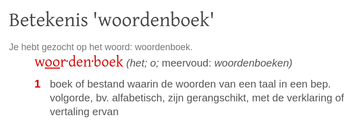

More on Lists#
Data#
string
integer / float
list
2D arrays zijn lijsten van lijsten, LoL’s
Lists#
Lists zijn containers, ze bevatten verwijzingen naar data
L = [5, 42, "hi"]
Indentiteit#
help(id)
Help on built-in function id in module builtins:
id(obj, /)
Return the identity of an object.
This is guaranteed to be unique among simultaneously existing objects.
(CPython uses the object's memory address.)
Het geheugenadres van L
id(L)
140402219939712
De geheugenadressen van de elementen van L
id(L[0]) # 5
140402371124616
id(L[1]) # 42
140402371125800
id(L[2]) # "hi"
140402355089456
Waarde en identiteit#
a = "Astronaut wordt snel oud tijdens een reis naar Mars"
b = "Astronaut wordt snel oud tijdens een reis naar Mars"
a == b
True
a is b
False
id(a)
140402239350672
id(b)
140402239348880
Verwijzingen#
by reference
Lists bevatten verwijzingen naar geheugenadressen, niet de waarden zelf!
by value
Getallen en strings verwijzen naar de waarde
Mutabiliteit#
mutable (veranderlijk)
Lists kunnen worden aangepast
immutable (onveranderlijk)
Getallen en strings kunnen niet worden aangepast
Mutable#
Lists
L = [11, 21]
id(L)
140402219958464
L[0] = 42
id(L)
140402219958464
L
[42, 21]
Immutable#
Strings en getallen
s = "hallo "
id(s)
140402219937200
s += "wereld"
id(s)
140402219842928
x = 10
id(x)
140402371124776
x += 1
id(x)
140402371124808
Functies?#
by copy
Functies ontvangen parameters als kopie
def fav(x):
print("fav VOOR: x is", id(x), "en heeft de waarde x", x)
x = "Pizza quattro formaggi"
print("fav NA: x is", id(x), "en heeft de waarde x", x)
def main():
y = "Pizza salami ananas" # bah
print("main VOOR: y is", id(y), "en heeft de waarde", y)
fav(y)
print("main NA: y is", id(y), "en heeft de waarde", y)
main()
main VOOR: y is 140402239529936 en heeft de waarde Pizza salami ananas
fav VOOR: x is 140402239529936 en heeft de waarde x Pizza salami ananas
fav NA: x is 140402239531536 en heeft de waarde x Pizza quattro formaggi
main NA: y is 140402239529936 en heeft de waarde Pizza salami ananas
Shallow versus deep copy#
De ene kopie is de andere niet!
Shallow copy#
Assignment statements in Python do not copy objects, they create bindings between a target and an object.
Wat create bindings hier betekent laten we in het midden, duidelijk is dat geen kopie wordt gecreëerd maar iets van een verwijzing die later eenvoudig te verbreken valt.
x = "regen"
y = x
x is y
True
y = "zonneschijn"
x is y
False
print("Na", x, "komt", y)
Na regen komt zonneschijn
Lists en shallow copy#
L = [5, 42, "hi"]
M = L
M[0] = 60
M[0]
60
L[0]
60
Lists zijn mutable en de shadow copy M verwijst nog steeds naar L en een aanpassing van M zal niet leiden tot een nieuwe list (zoals je wel zag gebeuren bij strings en integers).
Deep copy#
Deep copy is alleen relevant voor containertypes als lists!
A deep copy constructs a new compound object and then, recursively, inserts copies into it of the objects found in the original.
Een deep copy creëert een nieuwe container, eventuele wijzigingen zijn vervolgens alleen van toepassing op de kopie, niet het origineel.
from copy import deepcopy
L = [5, 42, "hi"]
M = deepcopy(L)
M is L
False
M[0] = 60
Wat is de waarde van L[0]?
L[0]
5
from copy import deepcopy
L = [5, 42, "hi"]
M = deepcopy(L)
M is L
False
M[0] = 60
Wat is de waarde van L[0]?
L[0]
5
Slicing is ook diep!#
L = [5, 42, "hi"]
M = L[:]
M[0] = 60
L[0]
5
Quiz#
Vraag 1#
def conform1(fav):
fav = 42
return fav
def main1():
fav = 7
conform1(fav)
print(fav)
Wat wordt geprint voor fav in de functie main1?
Antwoord#
main1()
7
Vraag 2#
def conform2(L):
L = [42, 42]
return L
def main2():
L = [7, 11]
conform2(L)
print(L)
Wat wordt geprint voor L in de functie main2?
Antwoord#
main2()
[7, 11]
Vraag 3#
def conform3(L):
L[0] = 42
L[1] = 42
def main3():
L = [7, 11]
conform3(L)
print(L)
Wat wordt geprint voor L in de functie main3?
Antwoord#
main3()
[42, 42]
Dictionaries#
Dictionaries zijn willekeurige containers
d = {47: 2, 42: 1}
Elementen (of waarden) worden opgehaald met een sleutel op een willekeurige positie
d[47] == 2
d[42] == 1
Goed nieuws, sleutels kunnen ook andere typen dan int zijn!

Een bekende structuur#
woord ⟶ verklaring
naam ⟶ telefoonnummer
afkorting ⟶ betekenis
dier ⟶ jaren Chinese dierenriem

Dictionaries zijn in#
z = {
"rabbit": [1999, 1987, 1975],
"ox": [1997, 1985, 1973],
"dragon": [2000, 1998]
}
De sleutels zijn hier strings en de bijbehorende waarden zijn lists. Dit voorbeeld gaat over de jaren per dier in de Chinese dierenriem, zie het Wikipedia artikel voor alle dieren en jaren!
Is "dragon" een sleutel in z?
"dragon" in z
True
Is 1969 een waarde in z["dragon"]?
1969 in z["dragon"]
False
Woorden tellen#
LoW = ["spam", "spam", "taart", "spam"]
d = {}
for w in LoW:
if w not in d:
d[w] = 1
else:
d[w] += 1
d
{'spam': 3, 'taart': 1}
Text generen#
Gegegeven de volgende text:
text = "Ik wil taarten en 42 en spam. Ik krijg toch spam en taarten voor de vakantie? Ik wil 42 taarten!"
LoW = text.split()
d = {}
for w in LoW:
if w not in d:
d[w] = 1
else:
d[w] += 1
print(f"There are {len(d)} DISTINCT words") # expressions in f-strings!
d
There are 13 DISTINCT words
{'Ik': 3,
'wil': 2,
'taarten': 2,
'en': 3,
'42': 2,
'spam.': 1,
'krijg': 1,
'toch': 1,
'spam': 1,
'voor': 1,
'de': 1,
'vakantie?': 1,
'taarten!': 1}
Texten generen#
Met een paar aanpassingen van het programma dat worden telt, is het mogelijk om een hele basic taal generator te maken.
Inplaats van het tellen van worden, wordt er gekeken, welk woord na welk woord wordt gebruikt.
%run assets/markov.py
d = create_dictionary(text)
d
{'$': ['Ik', 'Ik', 'Ik'],
'Ik': ['wil', 'krijg', 'wil'],
'wil': ['taarten', '42'],
'taarten': ['en', 'voor'],
'en': ['42', 'spam.', 'taarten'],
'42': ['en', 'taarten!'],
'krijg': ['toch'],
'toch': ['spam'],
'spam': ['en'],
'voor': ['de'],
'de': ['vakantie?']}
Een $ staat voor het begin van een zin. Dit model heeft voor elk woord een lijst van woorden waar uit gekozen kan worden. Als we dit random doen, wordt er een random tekst genereerd.
generate_text(d, 42)
'Ik wil 42 en taarten en spam. Ik krijg toch spam en taarten voor de vakantie? Ik wil taarten en spam. Ik wil 42 en 42 en spam. Ik wil 42 taarten! Ik wil taarten voor de vakantie? Ik wil taarten en '
Als we een veel grotere tekst gebruiken om onze database mee te vullen, kunnen we betere teksten generen.